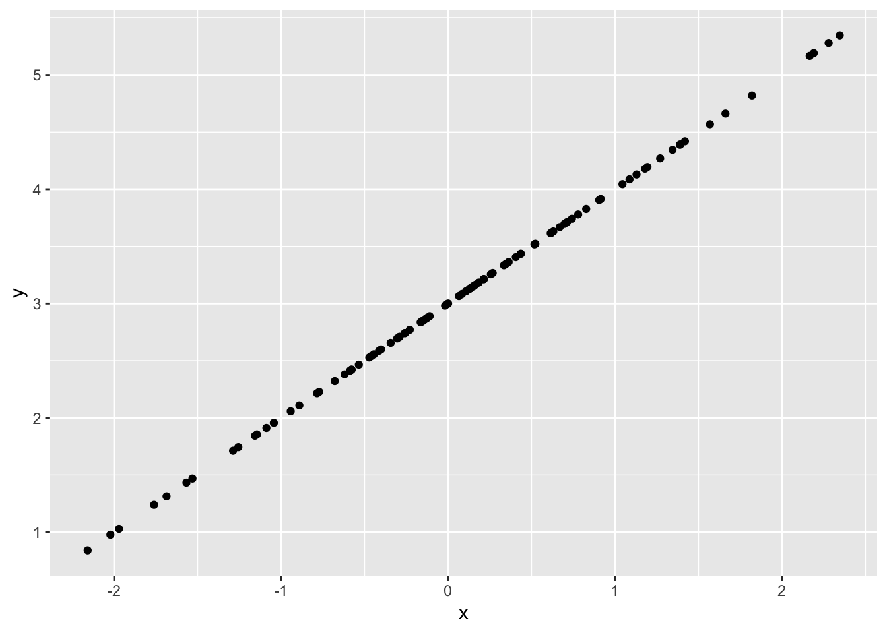
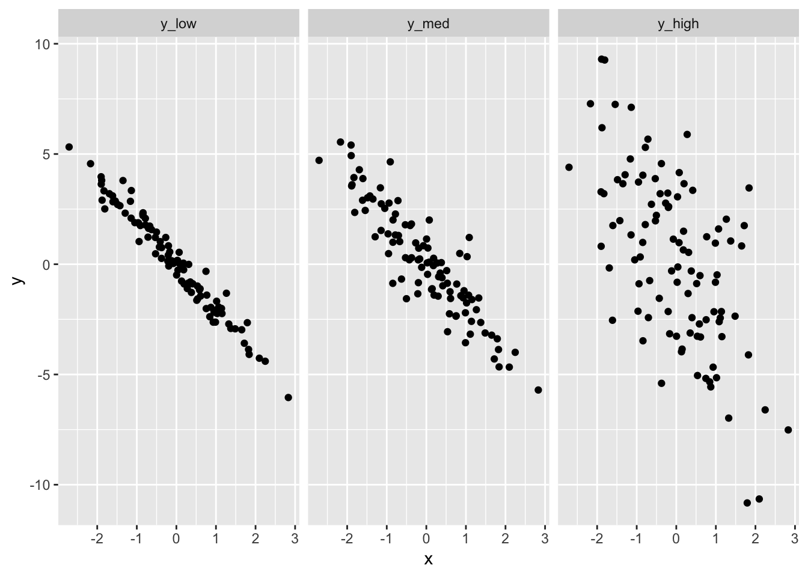
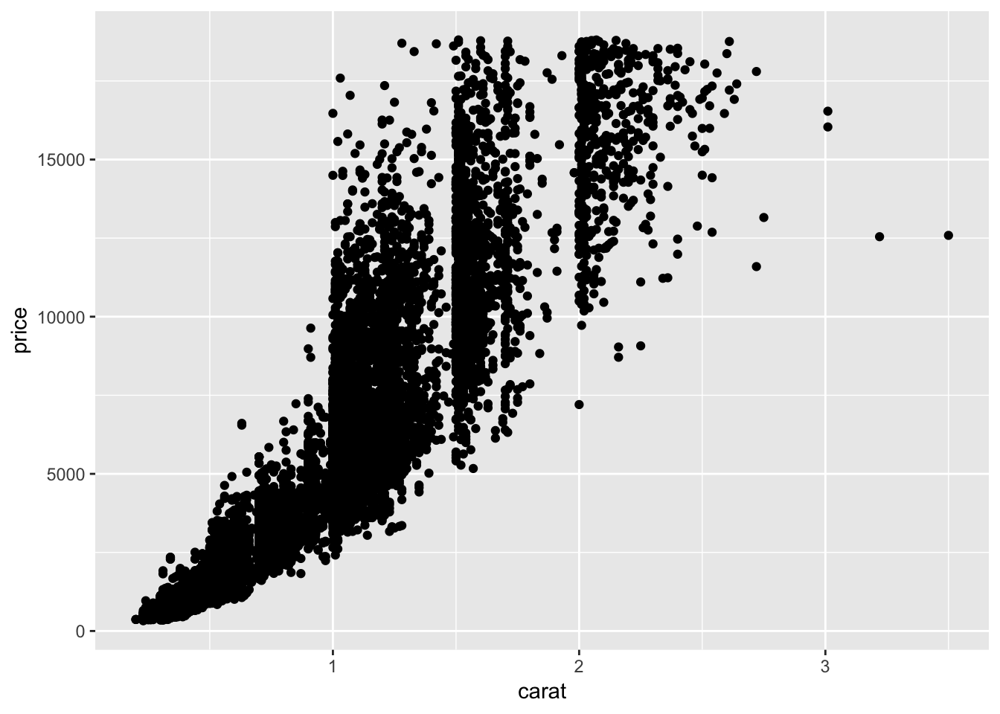
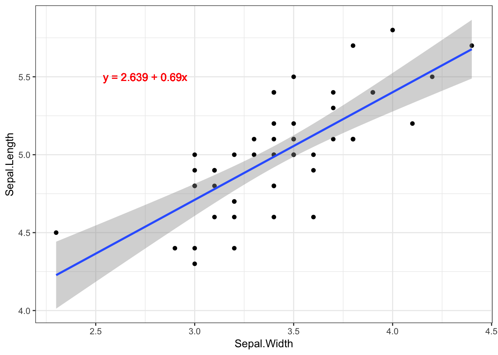
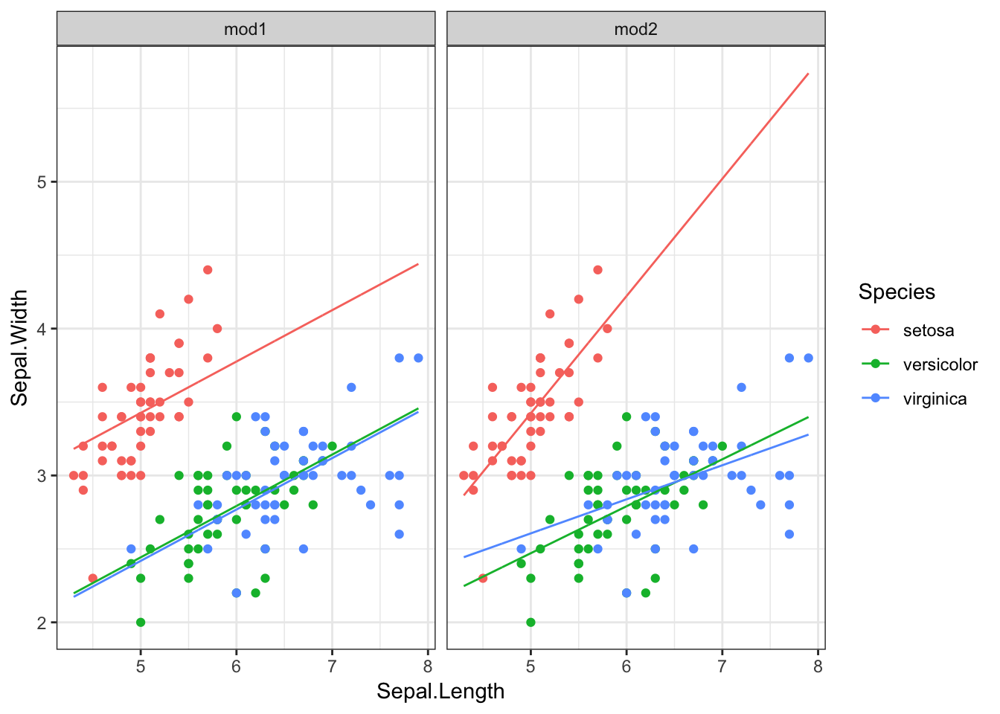

Last updated: 2018-11-06
workflowr checks: (Click a bullet for more information)
-
✔ R Markdown file: up-to-date
Great! Since the R Markdown file has been committed to the Git repository, you know the exact version of the code that produced these results.
-
✔ Environment: empty
Great job! The global environment was empty. Objects defined in the global environment can affect the analysis in your R Markdown file in unknown ways. For reproduciblity it’s best to always run the code in an empty environment.
-
✔ Seed: set.seed(20181026)
The command set.seed(20181026) was run prior to running the code in the R Markdown file. Setting a seed ensures that any results that rely on randomness, e.g. subsampling or permutations, are reproducible.
-
✔ Session information: recorded
Great job! Recording the operating system, R version, and package versions is critical for reproducibility.
-
✔ Repository version: 43c8686
Great! You are using Git for version control. Tracking code development and connecting the code version to the results is critical for reproducibility. The version displayed above was the version of the Git repository at the time these results were generated.
Note that you need to be careful to ensure that all relevant files for the analysis have been committed to Git prior to generating the results (you can use wflow_publish or wflow_git_commit). workflowr only checks the R Markdown file, but you know if there are other scripts or data files that it depends on. Below is the status of the Git repository when the results were generated:
Ignored files:
Ignored: .DS_Store
Ignored: .RData
Ignored: .Rhistory
Ignored: analysis/.DS_Store
Ignored: analysis/.Rapp.history
Ignored: analysis/.Rhistory
Note that any generated files, e.g. HTML, png, CSS, etc., are not included in this status report because it is ok for generated content to have uncommitted changes.
Expand here to see past versions:
|
File
|
Version
|
Author
|
Date
|
Message
|
|
Rmd
|
43c8686
|
Shengtong
|
2018-11-06
|
Nov62018
|
|
html
|
43c8686
|
Shengtong
|
2018-11-06
|
Nov62018
|
|
Rmd
|
6dcf86a
|
han16
|
2018-11-06
|
Nov62018
|
#knitr::opts_chunk$set(echo = TRUE)
#knitr::read_chunk("chunks.R")
library(tidyverse)
── Attaching packages ─────────────────────────────── tidyverse 1.2.1 ──
✔ ggplot2 3.1.0 ✔ purrr 0.2.5
✔ tibble 1.4.2 ✔ dplyr 0.7.7
✔ tidyr 0.8.2 ✔ stringr 1.3.1
✔ readr 1.1.1 ✔ forcats 0.3.0
── Conflicts ────────────────────────────────── tidyverse_conflicts() ──
✖ dplyr::filter() masks stats::filter()
✖ dplyr::lag() masks stats::lag()
########################################################
#### Go over HW 4
####
#### Review for midterm (next Monday!)
#### Read Chapter 23 from http://r4ds.had.co.nz/index.html.
#### Read http://sjspielman.org/bio5312_fall2017/files/lm_supplement.pdf
####
#### Any questions from last week?
#### {factors, ggplot2 color, dplyr, tidy data, relational data}
######################################################
#-------------------------------------------------------------
## In class warm-up to review tidy data:
#-------------------------------------------------------------
library(tidyverse)
#library(rcfss)
#data(dadmom) ## Note: this does not work for R 3.3.1
dadmom %>%
gather(key=parent, value=income, -famid, -named, -namem) %>%
mutate(new_parent = ifelse(parent == "incd", "dad", "mom")) %>%
mutate(name = ifelse(new_parent == "dad", named, namem)) %>%
select(-named, -namem, -parent) %>%
arrange(income)
table2 %>% spread(key=type, value=count) %>%
## This next part goes back
gather(key=type,value=count,cases:population)
## Tidy this dataframe (each variable should have its own column,
## each observation its own row, and each value its own cell)
Correlation
#=============================================================
## Correlation
#=============================================================
## Measures strength and direction of the LINEAR association between
## two numeric variables (-1 <= r <= 1)
data(iris)
setosa <- iris %>% filter(Species == "setosa")
#-------------------------------------------------------------
## Calculate the correlation between Sepal.Length and Sepal.Width
## in the setosa species, using both base R and dplyr.
## Plot the relationship between the two.
#-------------------------------------------------------------
#?cor
cor(setosa$Sepal.Length, setosa$Sepal.Width)
[1] 0.7425467
setosa %>% summarize(correlation = cor(Sepal.Length, Sepal.Width))
correlation
1 0.7425467
ggplot(setosa) + geom_point(aes(x=Sepal.Length, y=Sepal.Width))

Expand here to see past versions of unnamed-chunk-3-1.png:
|
Version
|
Author
|
Date
|
|
43c8686
|
Shengtong
|
2018-11-06
|
## It is VERY important to visualize data!
## Correlations (and summary statistics in general) can be
## the same for VERY different distributions
install.packages("datasauRus")
library(datasauRus)
datasaurus_dozen %>% filter(dataset == "dino") %>%
summarize(cor = cor(x,y), sd_x = sd(x), sd_y = sd(y),
mean_x = mean(x), mean_y = mean(y))
ggplot(datasaurus_dozen %>% filter(dataset == "dino")) +
geom_point(aes(x, y)) + theme_bw()
datasaurus_dozen %>% filter(dataset == "bullseye") %>%
summarize(cor = cor(x,y), sd_x = sd(x), sd_y = sd(y),
mean_x = mean(x), mean_y = mean(y))
ggplot(datasaurus_dozen %>% filter(dataset == "bullseye")) +
geom_point(aes(x, y)) + theme_bw()
ggplot(datasaurus_dozen, aes(x = x, y = y, colour = dataset)) +
geom_point() +
theme_void() +
theme(legend.position = "none") +
facet_wrap( ~ dataset, ncol = 3)
## Perfect positive correlation
x <- rnorm(100)
y <- x + 3
cor(x,y)
[1] 1
ggplot(data.frame(x=x,y=y), aes(x,y)) + geom_point()

Expand here to see past versions of unnamed-chunk-5-1.png:
|
Version
|
Author
|
Date
|
|
43c8686
|
Shengtong
|
2018-11-06
|
## Perfect negative correlation
x <- rnorm(100)
y <- -2*x
cor(x,y)
[1] -1
ggplot(data.frame(x=x,y=y), aes(x,y)) + geom_point()
Expand here to see past versions of unnamed-chunk-6-1.png:
|
Version
|
Author
|
Date
|
|
43c8686
|
Shengtong
|
2018-11-06
|
## Variability (error) has substantial influence
library(forcats)
x <- rnorm(100)
y_low <- -2 * x + rnorm(100, sd = 0.5)
y_med <- -2 * x + rnorm(100, sd = 1)
y_high <- -2 * x + rnorm(100, sd = 3)
df <- data.frame(x, y_low, y_med, y_high) %>%
gather(key="variability", value=y, -x)
df$variability <- fct_relevel(factor(df$variability), "y_low", "y_med", "y_high")
ggplot(df, aes(x,y)) +
geom_point() +
facet_wrap(~variability)

Expand here to see past versions of unnamed-chunk-7-1.png:
|
Version
|
Author
|
Date
|
|
43c8686
|
Shengtong
|
2018-11-06
|
df %>% group_by(variability) %>%
summarize(cor = cor(x,y))
# A tibble: 3 x 2
variability cor
<fct> <dbl>
1 y_low -0.981
2 y_med -0.908
3 y_high -0.624
## Can perform hypothesis testing with correlations
cor.test(setosa$Sepal.Length, setosa$Sepal.Width)
Pearson's product-moment correlation
data: setosa$Sepal.Length and setosa$Sepal.Width
t = 7.6807, df = 48, p-value = 6.71e-10
alternative hypothesis: true correlation is not equal to 0
95 percent confidence interval:
0.5851391 0.8460314
sample estimates:
cor
0.7425467
## How do we interpret this output?
cor.test(setosa$Petal.Length, setosa$Sepal.Width)
Pearson's product-moment correlation
data: setosa$Petal.Length and setosa$Sepal.Width
t = 1.2511, df = 48, p-value = 0.217
alternative hypothesis: true correlation is not equal to 0
95 percent confidence interval:
-0.1058851 0.4345536
sample estimates:
cor
0.1777
## How about this?
## What about nonlinear data? => Spearman rank nonparametric correlation!
## Assumes monotonic data
x <- seq(from=0.001, to=10, length=100)
y <- exp(x) + rnorm(length(x), sd = 100)
ggplot(data.frame(x,y), aes(x=x,y=y)) +
geom_point() +
geom_smooth(method="lm", se=FALSE)
Expand here to see past versions of unnamed-chunk-10-1.png:
|
Version
|
Author
|
Date
|
|
43c8686
|
Shengtong
|
2018-11-06
|
cor(x,y)
[1] 0.6898587
cor(x,y, method="spearman")
[1] 0.9150795
cor(order(x), order(y)) ## Same as Pearson correlation on ranks
[1] 0.9150795
#-------------------------------------------------------------
## Calculate the Pearson and Spearman correlation between
## carat and price in the diamonds data for cut = "Ideal" diamonds.
## Which one is best suited to these data?
#-------------------------------------------------------------
data(diamonds)
diamonds %>% filter(cut == "Ideal") %>%
summarize(pearson = cor(carat, price),
spearman = cor(carat, price, method="spearman"))
# A tibble: 1 x 2
pearson spearman
<dbl> <dbl>
1 0.931 0.954
ggplot(filter(diamonds, cut == "Ideal")) +
geom_point(aes(y=price, x=carat))

Expand here to see past versions of unnamed-chunk-11-1.png:
|
Version
|
Author
|
Date
|
|
43c8686
|
Shengtong
|
2018-11-06
|
Linear regression
#=============================================================
## Linear regression
##
## We use linear models to ask how various predictors affect, or to
## what extent a set of predictors can explain, a numeric response.
## The goal of linear modeling is to be able to predict the numeric
## response from explanatory variables.
##
## Least squares: find line of "best fit" that minimizes sum
## of squared residuals
##
## lm(Y ~ X, data = <data frame>)
#=============================================================
## Just having the correlation is not always enough
## e.g., sometimes we want to be able to predict, etc.
ggplot(setosa, aes(x=Sepal.Width, y=Sepal.Length)) +
geom_point() +
geom_smooth(method="lm", se=FALSE)
Expand here to see past versions of unnamed-chunk-12-1.png:
|
Version
|
Author
|
Date
|
|
43c8686
|
Shengtong
|
2018-11-06
|
mod <- lm(Sepal.Length ~ Sepal.Width,
data = setosa)
summary(mod)
Call:
lm(formula = Sepal.Length ~ Sepal.Width, data = setosa)
Residuals:
Min 1Q Median 3Q Max
-0.52476 -0.16286 0.02166 0.13833 0.44428
Coefficients:
Estimate Std. Error t value Pr(>|t|)
(Intercept) 2.6390 0.3100 8.513 3.74e-11 ***
Sepal.Width 0.6905 0.0899 7.681 6.71e-10 ***
---
Signif. codes: 0 '***' 0.001 '**' 0.01 '*' 0.05 '.' 0.1 ' ' 1
Residual standard error: 0.2385 on 48 degrees of freedom
Multiple R-squared: 0.5514, Adjusted R-squared: 0.542
F-statistic: 58.99 on 1 and 48 DF, p-value: 6.71e-10
## What are the conclusions of the linear model?
## (Intercept):
## Sepal.Width:
## Estimate/Std. Error/t value/Pr(>|t|):
## Residual standard error:
## Multiple R-squared, adjusted R-squared:
## F-statistic:
## broom is a package that tidies results from a linear model / hypothesis tests
## 3 functions: tidy(), glance(), augment()
library(broom)
tidy(mod) ## Coefficients and p-values
# A tibble: 2 x 5
term estimate std.error statistic p.value
<chr> <dbl> <dbl> <dbl> <dbl>
1 (Intercept) 2.64 0.310 8.51 3.74e-11
2 Sepal.Width 0.690 0.0899 7.68 6.71e-10
glance(mod) ## Concise one row summary
# A tibble: 1 x 11
r.squared adj.r.squared sigma statistic p.value df logLik AIC BIC
* <dbl> <dbl> <dbl> <dbl> <dbl> <int> <dbl> <dbl> <dbl>
1 0.551 0.542 0.239 59.0 6.71e-10 2 1.73 2.53 8.27
# ... with 2 more variables: deviance <dbl>, df.residual <int>
augment(mod) ## Add columns from fit to original data that were modeled
# A tibble: 50 x 9
Sepal.Length Sepal.Width .fitted .se.fit .resid .hat .sigma .cooksd
* <dbl> <dbl> <dbl> <dbl> <dbl> <dbl> <dbl> <dbl>
1 5.1 3.5 5.06 0.0344 0.0443 0.0207 0.241 3.73e-4
2 4.9 3 4.71 0.0512 0.190 0.0460 0.239 1.60e-2
3 4.7 3.2 4.85 0.0395 -0.149 0.0274 0.240 5.61e-3
4 4.6 3.1 4.78 0.0448 -0.180 0.0353 0.240 1.07e-2
5 5 3.6 5.12 0.0371 -0.125 0.0242 0.240 3.48e-3
6 5.4 3.9 5.33 0.0542 0.0681 0.0516 0.241 2.34e-3
7 4.6 3.4 4.99 0.0338 -0.387 0.0201 0.234 2.75e-2
8 5 3.4 4.99 0.0338 0.0133 0.0201 0.241 3.27e-5
9 4.4 2.9 4.64 0.0582 -0.241 0.0596 0.238 3.45e-2
10 4.9 3.1 4.78 0.0448 0.120 0.0353 0.240 4.84e-3
# ... with 40 more rows, and 1 more variable: .std.resid <dbl>
## Visualizing the regression
ggplot(setosa, aes(x=Sepal.Width, y=Sepal.Length)) +
geom_point() +
geom_smooth(method="lm") +
geom_text(x = 2.75, y = 5.5, label = "y = 2.639 + 0.69x", color="red") +
theme_bw()

Expand here to see past versions of unnamed-chunk-14-1.png:
|
Version
|
Author
|
Date
|
|
43c8686
|
Shengtong
|
2018-11-06
|
## Predicting responses using the model
## What is the Sepal.Length when Sepal.Width = 2.6?
new_setosa <- data.frame(Sepal.Width = c(2.6, 4, 3.5))
predict(mod, new_setosa)
1 2 3
4.434275 5.400960 5.055715
## Predicting a new response with confidence or prediction interval
## Confidence interval: range likely to contain the mean response
predict(mod, new_setosa, interval = "confidence")
fit lwr upr
1 4.434275 4.269957 4.598592
2 5.400960 5.277305 5.524615
3 5.055715 4.986649 5.124781
## Prediction interval: range likely to contain the response value of
## a single new observation (wider than CI due to added uncertainty
## for predicting a single point)
predict(mod, new_setosa, interval = "predict")
fit lwr upr
1 4.434275 3.927287 4.941262
2 5.400960 4.905655 5.896265
3 5.055715 4.571147 5.540284
predict(mod, new_setosa, interval = "confidence", level=0.90)
fit lwr upr
1 4.434275 4.297205 4.571344
2 5.400960 5.297810 5.504110
3 5.055715 4.998102 5.113328
Checking model assumptions
## 1. Residuals are normally distributed
## 2. Variance is the same for all predictors
## 3. Predictors are independent of one another
## 4. Relationship between response and predictors is linear
##
## How do we check each of these assumptions?
#-------------------------------------------------------------
## Graphically check assumptions 1,2,4 for the setosa data
#-------------------------------------------------------------
aug <- augment(mod)
resids <- residuals(mod)
fitted <- fitted(mod)
## Assumption 1
ggplot(aug) + geom_histogram(aes(x=.resid),
bins=15)
Expand here to see past versions of unnamed-chunk-18-1.png:
|
Version
|
Author
|
Date
|
|
43c8686
|
Shengtong
|
2018-11-06
|
ggplot(aug) + geom_qq(aes(sample=.resid))
Expand here to see past versions of unnamed-chunk-18-2.png:
|
Version
|
Author
|
Date
|
|
43c8686
|
Shengtong
|
2018-11-06
|
## Assumption 2
ggplot(aug) + geom_point(aes(x=.fitted, y=.resid)) +
geom_hline(yintercept=0, lty=2)
Expand here to see past versions of unnamed-chunk-19-1.png:
|
Version
|
Author
|
Date
|
|
43c8686
|
Shengtong
|
2018-11-06
|
## Assumption 4
ggplot(aug) + geom_point(aes(x=Sepal.Width, y=Sepal.Length))

Expand here to see past versions of unnamed-chunk-20-1.png:
|
Version
|
Author
|
Date
|
|
43c8686
|
Shengtong
|
2018-11-06
|
Matrix algebra
#=============================================================
## A quick break: Matrix algebra in R
#=============================================================
## Creating a couple of matrices
x1 <- c(3,4,5,6)
x2 <- c(10,11,12,13)
x3 <- c(-1, -2, -3, -4)
A <- cbind(x1, x2, x3)
B <- rbind(x1, x2, x3)
## Reminder about extracting elements from matrices
A[1,3] ## pulls element in row1, column3 of A
x3
-1
A[,1] ## pulls first column
[1] 3 4 5 6
A[1,]
x1 x2 x3
3 10 -1
A[2,2:3]
x2 x3
11 -2
A[2, c(1,3)]
x1 x3
4 -2
## Recall how multiplication/addition in R are done element-wise
A * B # not working
A + B
## If we are after "classic" matrix multiplication, we have to do as follows:
A %*% B
[,1] [,2] [,3] [,4]
[1,] 110 124 138 152
[2,] 124 141 158 175
[3,] 138 158 178 198
[4,] 152 175 198 221
B %*% A
x1 x2 x3
x1 86 212 -50
x2 212 534 -120
x3 -50 -120 30
## What is the difference between the two following operations?
x1*x2
[1] 30 44 60 78
x1 %*% x2
[,1]
[1,] 212
## What happens when we transpose a matrix?
t(A) + B
[,1] [,2] [,3] [,4]
x1 6 8 10 12
x2 20 22 24 26
x3 -2 -4 -6 -8
A - t(B)
x1 x2 x3
[1,] 0 0 0
[2,] 0 0 0
[3,] 0 0 0
[4,] 0 0 0
## We can take the inverse of a square matrix
A = rbind(c(-1,4), c(3,6))
c = c(8,30)
x = solve(A,c)
#### This basically finds x, such that Ax=c
#### Let's doubl check
A %*% x
[,1]
[1,] 8
[2,] 30
#### We can also use the solve function to find the inverse of a matrix
A.inv = solve(A)
#### Check
A.inv %*% A
[,1] [,2]
[1,] 1 2.220446e-16
[2,] 0 1.000000e+00
A %*% A.inv
[,1] [,2]
[1,] 1 -2.775558e-17
[2,] 0 1.000000e+00
### Note the rounding errors!
### Recall linear regression
### If our model is Y = XB + e, then beta.hat = inverse(X'X)X'Y
x1 <- rep(1, times=10)
x2 <- 1:10
X <- cbind(x1, x2)
y <- x2 + rnorm(10)
beta.hat = solve(t(X) %*% X) %*% t(X) %*% y
## Double-check this is the same with lm!
summary(lm(y ~ x2))
Call:
lm(formula = y ~ x2)
Residuals:
Min 1Q Median 3Q Max
-1.0031 -0.5715 0.1347 0.4851 0.9279
Coefficients:
Estimate Std. Error t value Pr(>|t|)
(Intercept) -1.49711 0.52237 -2.866 0.021 *
x2 1.20681 0.08419 14.335 5.47e-07 ***
---
Signif. codes: 0 '***' 0.001 '**' 0.01 '*' 0.05 '.' 0.1 ' ' 1
Residual standard error: 0.7647 on 8 degrees of freedom
Multiple R-squared: 0.9625, Adjusted R-squared: 0.9578
F-statistic: 205.5 on 1 and 8 DF, p-value: 5.475e-07
beta.hat
[,1]
x1 -1.497112
x2 1.206807
## And double-check with a plot
plot(x2, y, pch=20, cex=3)
abline(beta.hat[1], beta.hat[2])

Expand here to see past versions of unnamed-chunk-29-1.png:
|
Version
|
Author
|
Date
|
|
43c8686
|
Shengtong
|
2018-11-06
|
#### Do you remeber the form of var(beta.hat)?
#### The diagonal elements of sigma^2 * inverse(X'X)
#### How do we estimate sigma^2? (Y-y.hat)'(Y-y.hat)/n-p
y.hat <- X %*% beta.hat
sigma.2 <- t(y - y.hat) %*% (y-y.hat)/(10-2)
Var.Cov.beta <- as.numeric(sigma.2) * solve(t(X) %*% X)
se.beta1.hat <- sqrt(Var.Cov.beta[2,2])
se.beta0.hat <- sqrt(Var.Cov.beta[1,1])
my_linear_regression <- function(y, X) {
n <- length(y)
p <- dim(X)[2]
beta.hat <- solve(t(X) %*% X) %*% t(X) %*% y
y.hat <- X %*% beta.hat
sigma.2 <- t(y - y.hat) %*% (y-y.hat)/(n-p)
Var.Cov.beta <- as.numeric(sigma.2) * solve(t(X) %*% X)
se.beta1.hat <- sqrt(Var.Cov.beta[2,2])
se.beta0.hat <- sqrt(Var.Cov.beta[1,1])
return(list(beta.hat=beta.hat, se0=se.beta0.hat, se1=se.beta1.hat))
}
## Now check that they match!
y.sim <- rnorm(1000)
X.sim <- cbind(rep(1, times=1000), c(rep(0, times=500), rep(1, times=500)))
my_linear_regression(y.sim, X.sim)
$beta.hat
[,1]
[1,] -0.06510661
[2,] -0.02439115
$se0
[1] 0.04488844
$se1
[1] 0.06348184
lm(y.sim ~ 0 + X.sim)
Call:
lm(formula = y.sim ~ 0 + X.sim)
Coefficients:
X.sim1 X.sim2
-0.06511 -0.02439
lm(y.sim ~ X.sim[,2])
Call:
lm(formula = y.sim ~ X.sim[, 2])
Coefficients:
(Intercept) X.sim[, 2]
-0.06511 -0.02439
#=============================================================
## Linear models: lm(Numeric response ~ <predictors>)
##
## Single numeric predictor = Regression
## Single categorical predictor = ANOVA
## Multiple numeric predictors = Multiple regression
## Multiple categorical predictors = n-way ANOVA
## Single categorical and n numeric predictors = ANCOVA
## Multiple categorical and n numeric predictors = linear model
#=============================================================
## What happens with a categorical predictor?
mod_species <- lm(Sepal.Length ~ Species, data=iris)
summary(mod_species) ## Where is the Speciessetosa coefficient?
Call:
lm(formula = Sepal.Length ~ Species, data = iris)
Residuals:
Min 1Q Median 3Q Max
-1.6880 -0.3285 -0.0060 0.3120 1.3120
Coefficients:
Estimate Std. Error t value Pr(>|t|)
(Intercept) 5.0060 0.0728 68.762 < 2e-16 ***
Speciesversicolor 0.9300 0.1030 9.033 8.77e-16 ***
Speciesvirginica 1.5820 0.1030 15.366 < 2e-16 ***
---
Signif. codes: 0 '***' 0.001 '**' 0.01 '*' 0.05 '.' 0.1 ' ' 1
Residual standard error: 0.5148 on 147 degrees of freedom
Multiple R-squared: 0.6187, Adjusted R-squared: 0.6135
F-statistic: 119.3 on 2 and 147 DF, p-value: < 2.2e-16
augment_species <- augment(mod_species)
ggplot(augment_species, aes(x=Species, y=Sepal.Length)) +
geom_point() +
geom_point(aes(x=Species, y=.fitted), color="red", size=4)
Expand here to see past versions of unnamed-chunk-32-1.png:
|
Version
|
Author
|
Date
|
|
43c8686
|
Shengtong
|
2018-11-06
|
## Interactions: continuous and categorical
ggplot(iris, aes(x=Sepal.Length, y=Sepal.Width)) +
geom_point(aes(color=Species))
Expand here to see past versions of unnamed-chunk-33-1.png:
|
Version
|
Author
|
Date
|
|
43c8686
|
Shengtong
|
2018-11-06
|
mod1 <- lm(Sepal.Width ~ Sepal.Length + Species, data=iris)
mod2 <- lm(Sepal.Width ~ Sepal.Length * Species, data=iris)
## Use commands from modelr
library(modelr)
Attaching package: 'modelr'
The following object is masked from 'package:broom':
bootstrap
grid <- data_grid(iris, Sepal.Length, Sepal.Width, Species) %>%
gather_predictions(mod1, mod2)
ggplot(iris, aes(x=Sepal.Length, y=Sepal.Width, colour = Species)) +
geom_point() +
geom_line(data = grid, aes(y = pred)) +
facet_wrap(~ model) + theme_bw()

Expand here to see past versions of unnamed-chunk-34-1.png:
|
Version
|
Author
|
Date
|
|
43c8686
|
Shengtong
|
2018-11-06
|
res <- iris %>% gather_residuals(mod1, mod2)
ggplot(res, aes(x=Sepal.Length, y=resid, colour = Species)) +
geom_point() +
facet_grid(model ~ Species)
Expand here to see past versions of unnamed-chunk-34-2.png:
|
Version
|
Author
|
Date
|
|
43c8686
|
Shengtong
|
2018-11-06
|
## Reminder: we can always check the model matrix to see the equation fit by lm!
model_matrix(iris, Sepal.Length ~ Species)
# A tibble: 150 x 3
`(Intercept)` Speciesversicolor Speciesvirginica
<dbl> <dbl> <dbl>
1 1 0 0
2 1 0 0
3 1 0 0
4 1 0 0
5 1 0 0
6 1 0 0
7 1 0 0
8 1 0 0
9 1 0 0
10 1 0 0
# ... with 140 more rows
## For a true confirmatory analysis:
## Training set (60%), query set (20%), test set (20%)
#=============================================================
## Next time: Midterm! Class cancelled
## Following that: logistic regression, model selection, multiple testing
#=============================================================
This reproducible R Markdown
analysis was created with
workflowr 1.1.1